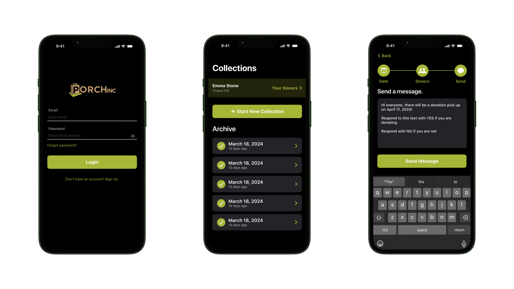
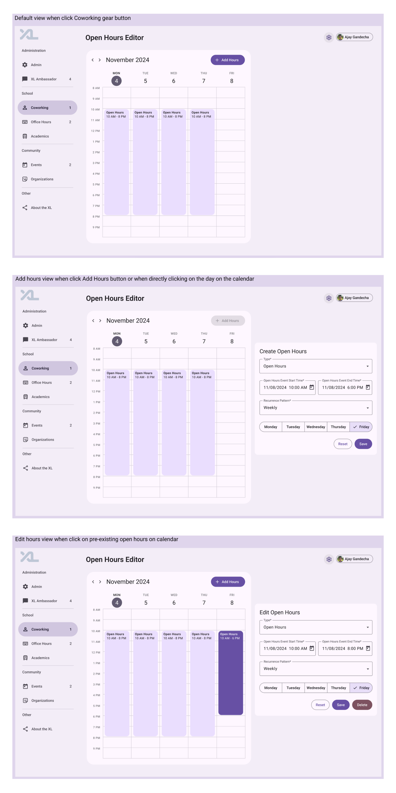
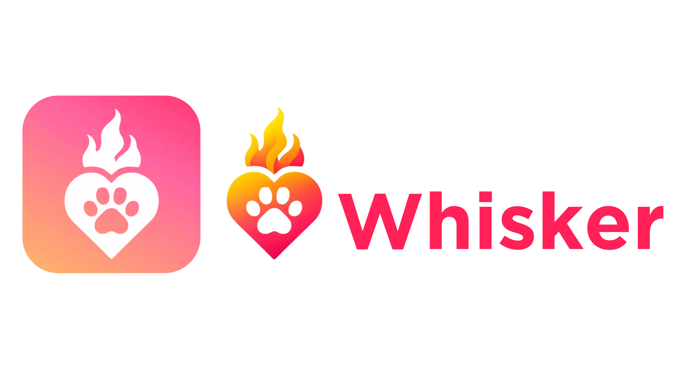

Projects
I've had the chance to combine my passion for social good with user-centric design, iOS development, full-stack development, and product management across a range of impactful projects.
PORCH Mobile App
 I serve as the team lead for a 10-person cross-functional group developing an iOS app for PORCH, a grassroots hunger relief nonprofit. Working closely with PORCH's founder, I conduct user interviews, collaborate on Figma designs, and oversee an agile development process. Our goal is to create a user-centric MVP that streamlines food donation collection, aligns with stakeholder needs, and advances PORCH's mission to combat food insecurity. This app is one of several projects App Team Carolina maintains in production, and I look forward to continuing my work on this team throughout my time at UNC.Tools Used
- Swift, Xcode
- Figma (User-Centric Design, Wireframing)
- Agile/Scrum Methodologies (Team Coordination)
- Git & GitHub (Version Control)
UNC CS Experience Labs: Open Hours Editor
 I served as the UI/UX designer, product manager, and front-end developer for a new operating hours editor that seamlessly integrated with the existing UNC CS Experience Labs site. By leading the user research, wireframing, and Figma design (pictured above) components of the four-person team project, my team and I enhanced administrative scheduling efficiency. Recognized as the best design out of 100+ student projects, this feature was officially adopted and integrated into the platform.Tools Used
- Figma (User Research, Wireframing)
- Angular, TypeScript
- HTML & CSS
- Python
- FastAPI (Backend Integration)
- Git & GitHub (Version Control)
Whisker
 Embark on your journey to find the “purrfect” pet with Whisker, an iOS adoption app built using the RescueGroups API and recognized with “Best UI/UX Design.” As the UI/UX Designer, Product Manager, and Front-End Developer, I implemented a swipe-to-save feature, integrated MVVM and local storage, and enabled light/dark modes for an intuitive user experience. Users can filter pets by zip code and radius, view detailed animal profiles, and easily manage saved favorites. This project was the culminating end-of-semester effort during my second semester in App Team Carolina's iOS Apprenticeship Cohort, where I defined the project roadmap, designed the logo, and led team scrum meetings to deliver a polished, engaging MVP.
Embark on your journey to find the “purrfect” pet with Whisker, an iOS adoption app built using the RescueGroups API and recognized with “Best UI/UX Design.” As the UI/UX Designer, Product Manager, and Front-End Developer, I implemented a swipe-to-save feature, integrated MVVM and local storage, and enabled light/dark modes for an intuitive user experience. Users can filter pets by zip code and radius, view detailed animal profiles, and easily manage saved favorites. This project was the culminating end-of-semester effort during my second semester in App Team Carolina's iOS Apprenticeship Cohort, where I defined the project roadmap, designed the logo, and led team scrum meetings to deliver a polished, engaging MVP.
Tools Used
- Swift, SwiftUI, Xcode
- RescueGroups API
- MVVM Architecture
- Light/Dark Mode Implementation
- Git & GitHub (Version Control)
To learn more about Whisker and see the demo, check out the project's repo: GitHub
Weather App
 I created a feature-rich weather app, closely recreating Apple's Weather App, as the culminating end-of-semester project in App Team Carolina's iOS Academy, marking the conclusion of my first semester on the team. The app displays the current temperature, an hourly and 10-day forecast (with relevant icons), air quality levels, UV index, and sunrise/sunset times—each illustrated with interactive gradients. It also includes a toggle-based reporting system for inaccuracies, a “Report an Issue” view, and user notifications. This project demonstrates my commitment to detail-oriented UI design and user-focused functionality, delivering an intuitive, engaging weather experience.
I created a feature-rich weather app, closely recreating Apple's Weather App, as the culminating end-of-semester project in App Team Carolina's iOS Academy, marking the conclusion of my first semester on the team. The app displays the current temperature, an hourly and 10-day forecast (with relevant icons), air quality levels, UV index, and sunrise/sunset times—each illustrated with interactive gradients. It also includes a toggle-based reporting system for inaccuracies, a “Report an Issue” view, and user notifications. This project demonstrates my commitment to detail-oriented UI design and user-focused functionality, delivering an intuitive, engaging weather experience.
Tools Used
- Swift, SwiftUI, Xcode
- MVVM Architecture
- Local Storage
- Git & GitHub (Version Control)
To learn more about Weather App Recreation and see the demo, check out the project's repo: GitHub
UNC Latinos in Tech Graphics & Designs

 During my tenure as Marketing Director of UNC Latinos in Tech, I spearheaded our social media presence on Instagram and LinkedIn by creating a diverse range of marketing assets. These included sponsorship packages, event branding, stickers, hand-drawn t-shirt designs, and various graphics that amplified our organization’s brand identity and outreach. Through these efforts, I refined my design skills across multiple platforms and ensured cohesive, engaging content for our growing community.
During my tenure as Marketing Director of UNC Latinos in Tech, I spearheaded our social media presence on Instagram and LinkedIn by creating a diverse range of marketing assets. These included sponsorship packages, event branding, stickers, hand-drawn t-shirt designs, and various graphics that amplified our organization’s brand identity and outreach. Through these efforts, I refined my design skills across multiple platforms and ensured cohesive, engaging content for our growing community.
Tools Used
- Canva (Design & Layout)
- Instagram & LinkedIn (Marketing Channels)
- Adobe Photoshop
UpCycle Creations
I founded and manage this sustainable fashion venture, designing and selling custom upcycled clothing that has generated over $1,000 in net profit and maintained a 5-star rating. By overseeing procurement, customer relations, and financial tracking, I blend creativity with sustainability—reducing waste while promoting conscious consumerism.Tools Used
- Social Media Marketing (Instagram, Mercari, Depop)
- Financial Tracking/Spreadsheet Tools
HealthEats Analyst
I served as an Analyst and Product Manager, leading a cross-functional team to develop a synthetic expert that classifies restaurant food healthiness using NLP. This involved communicating technical concepts to non-technical stakeholders, ultimately earning our team the “Most Compelling Presentation” award.Tools Used
- Python (NLP Libraries such as NLTK)
- Agile Methodologies (Scrum Meetings, Backlog Management)
- Google Colab Jupyter Notebook
- Microsoft Powerpoint (For Demos & Stakeholder Reviews)
For more projects (like this portfolio!) and code samples, check out my GitHub.